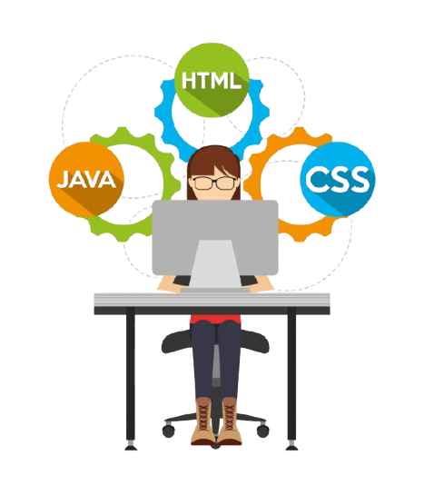

Sou estudante de Análise e Desenvolvimento de Sistemas, em transição ativa para a área de tecnologia, com foco em desenvolvimento web front-end. Atualmente, desenvolvo projetos práticos usando, JavaScript, HTML e CSS, criando interfaces responsivas, aplicando boas práticas de código e versionamento com Git. Minha formação técnica em Desenvolvimento de Sistemas pelo SENAI fortaleceu minha base em lógica, resolução de problemas e pensamento analítico. No ambiente profissional, como Jovem Aprendiz, desenvolvi disciplina, organização e foco em entrega — competências que aplico diretamente no meu aprendizado como desenvolvedor. Busco minha primeira oportunidade como desenvolvedor júnior ou estágio em front-end, onde eu possa gerar valor real, evoluir tecnicamente e crescer junto com o time.